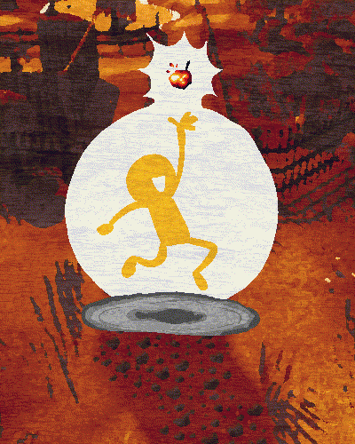

Chat is active! Please chat respectfully.
Orange35711 the Chariotscout joined!
DOVdotcom: Oh hey orange!
Orange35711: wassup!!
Orange35711: I need to grind for the flametongue quest
Orange35711: do you have any glrcbherries
DOVdotcom: Hehe!
Orange35711: torchberries*
DOVdotcom: Well I don't have any glrcbherries but I have
DOVdotcom: 12 torchberries
Orange35711: blehhh
DOVdotcom: sorry! I can help you grind though
Orange35711: yes come help me
Orange35711: im at the trailhead for the area
DOVdotcom: Okii ^^
